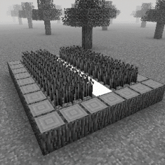
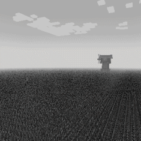
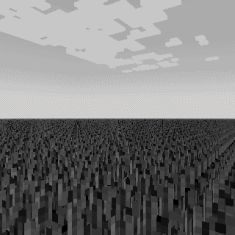
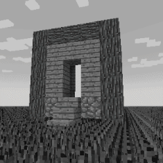

"None of this is real."
- Entrapped Player




Endless Fields is a safe, Plane type Layer 1 dimension accessible from Wonderland[D]. It is a relatively simple dimension, containing no entities, a low amount of structures and a very basic layout. The entrance is a village farmfield housing fully grown wheat crops with a white portal inside the water compartment.
The entire dimension is an endless patch of farmland, specifically for wheat. Although, the wheat is not obtainable. The crop will dissapear the moment you try to harvest it. Despite this, yields of wheat can be found withing chests inside of structures.
While there are no entities present, it is believed that this dimension does have or had an inhabitant. One can find journals inside of the structures. They tell a story of someone, theorized to be one of the victims of the Wonderland, going mad as they seek a way out. Numerous times they say the contents of the Wonderland are not real. Being fabrication.
Many of the structures here do not serve a practical purpose and seem to be made for aesthetic purposes. They are themed around what one might find in a crop field. Windmills, shades and small huts. One might also find a particular build, the frontside of what appears to be an unfinished oak manor.
The exit of Endless Fields is a small wood hut containing a white portal in the middle of it. This will take you to Wonderland[D]. There isn't much of a purpose to intentionally come to this dimension. Though one can safely rest here if they have the need to.
Threat level: 0
Layer: 1
Name: Endless Fields
Type: Plane